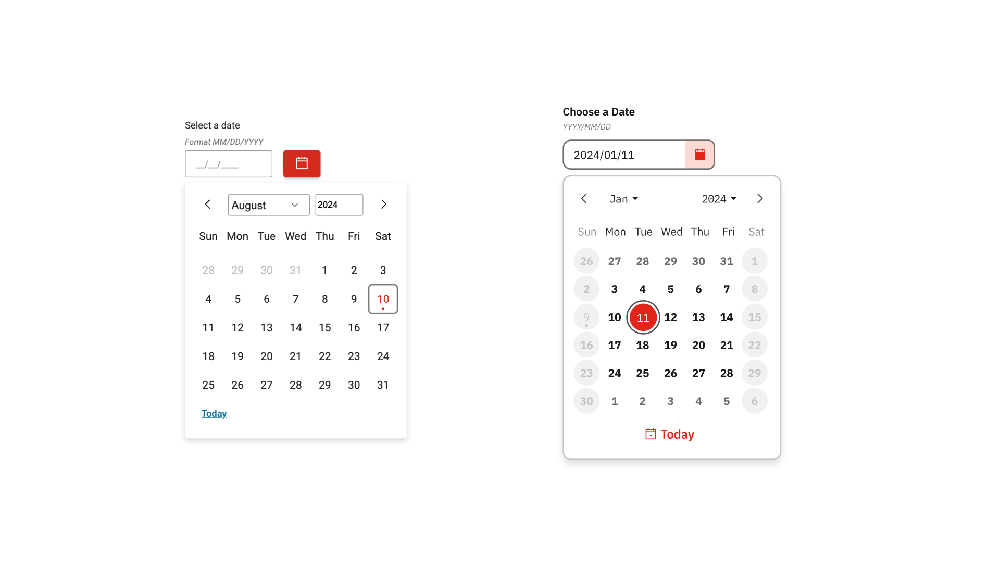
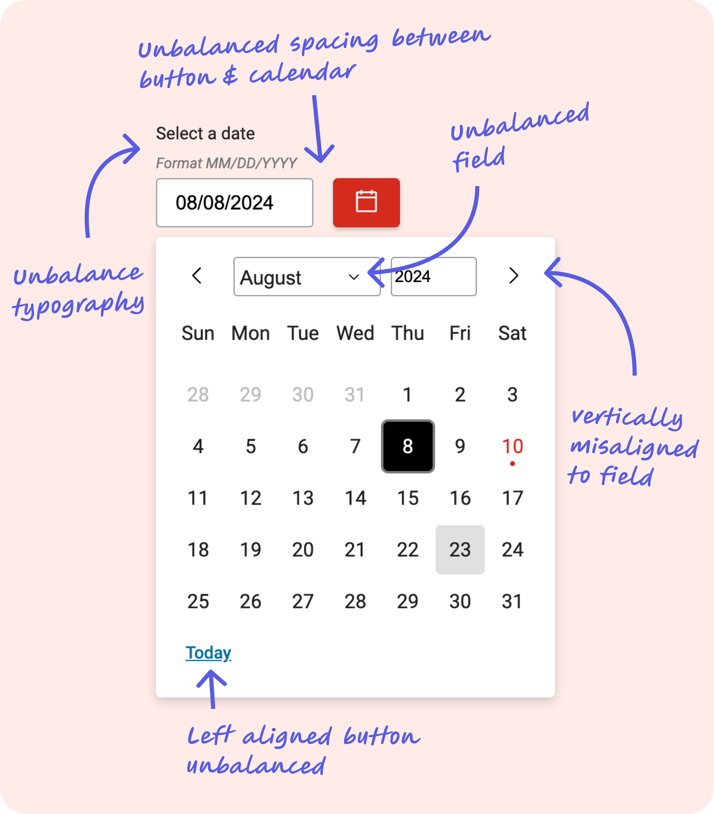
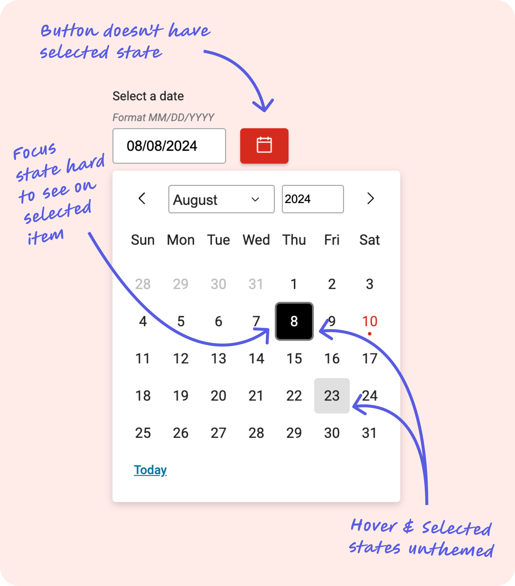
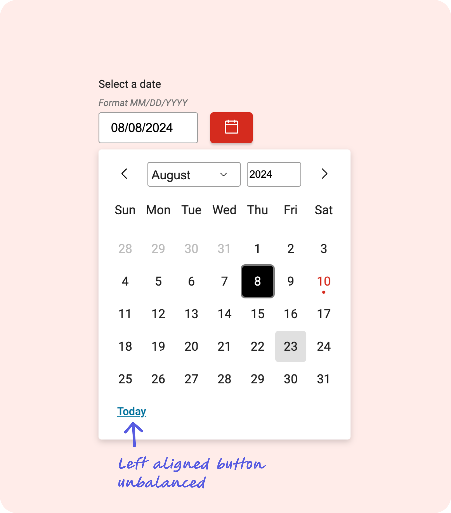
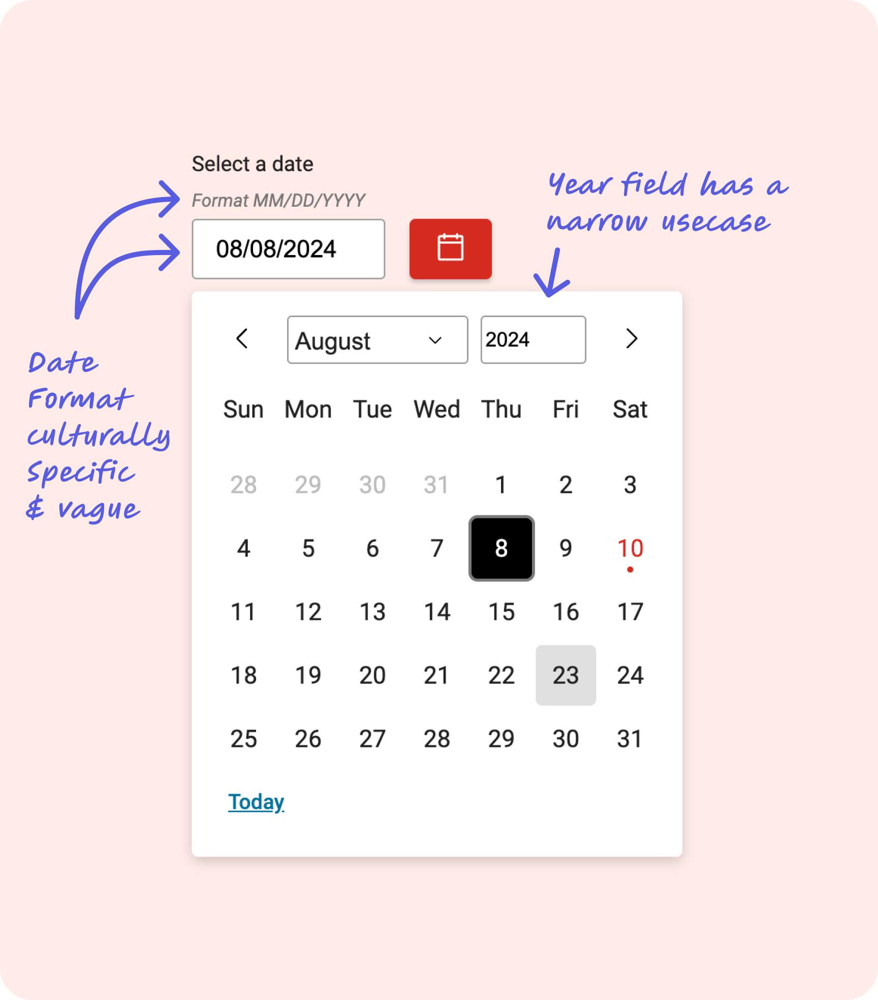

Component Redesign · Design Systems · Accessibility
Modernizing an Outdated Component Across a Global Design System
A post-refresh audit revealed compounding issues in a single enterprise component. The fix was surgical — the impact was system-wide.
Project Overview
After a system-wide visual refresh, I audited every component. The date picker didn't pass. Four distinct problem categories — alignment, missing states, a mislabeled control, and usability gaps that assumed everyone lived in America.
Two weeks later, fixes were live across every brand in the system.
Project Details

Before (left) and after (right) — the redesigned component aligned to the refreshed design system
The Audit That Started It All
The design system had recently gone through a visual refresh — updated typography, color tokens, and component styles across the board. After the refresh landed, I ran a component-by-component audit to identify anything that hadn't carried through cleanly.
The date picker surfaced four distinct problem categories. None were catastrophic in isolation, but together they created a component that felt misaligned with the rest of the refreshed system — both visually and behaviorally.
Scope: Because this component lives in the core design system, every fix applied immediately across all brands and products. There was no partial rollout — getting it right mattered from the start.
What Was Actually Broken
Four problem categories were identified and addressed. Each is documented below with the specific issues found, their impact, and how they were resolved.

Alignment issues identified during audit — unbalanced spacing, misaligned arrows, and left-aligned Today button

Missing button selected state, unthemed hover/selected states, and hard-to-see focus indicator on selected items

Left-aligned "Today" link — off-brand color and incorrect affordance for an action control

MM/DD/YYYY format tied to American conventions, and year field with limited use case
What We Shipped vs. What We Documented
Not every identified improvement made it into the shipped component. Two items were scoped out due to development complexity and timeline, and moved into documentation instead — a deliberate decision made in collaboration with the development team.
The date hint field is currently a custom field and not programmatically generated. Full internationalization of date formats was prohibitively complex to implement within the release timeline. Rather than delay the core improvements, we documented the constraint and provided guidance for teams working across locales.
We initially explored removing the previous/next month navigation arrows, citing accessibility concerns around redundant controls. However, depending on how a month falls — particularly when the last day lands on a Saturday — users wouldn't be guaranteed visibility of adjacent months in the calendar grid. The arrows were retained to preserve navigability across all calendar configurations.
Design principle at work: Moving items to documentation rather than blocking a release is a legitimate product decision — it keeps real improvements shipping while being transparent about known limitations. The goal is progress, not perfection held hostage by edge cases.
One Fix. Every Brand.
The redesigned date picker shipped to production within roughly two weeks of the audit, applying across every brand in the design system simultaneously. The component now aligns with the visual standards of the refreshed system, meets accessibility expectations for interactive states, and communicates its controls with appropriate affordances.